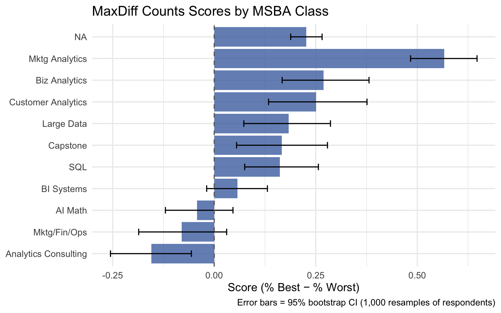
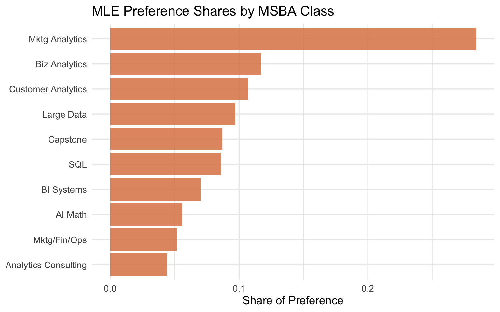
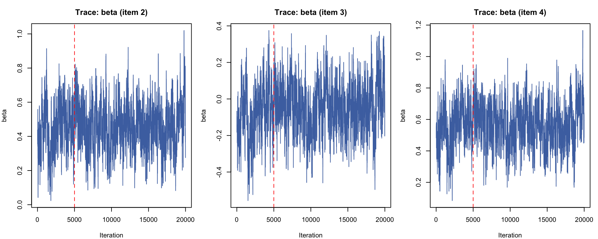
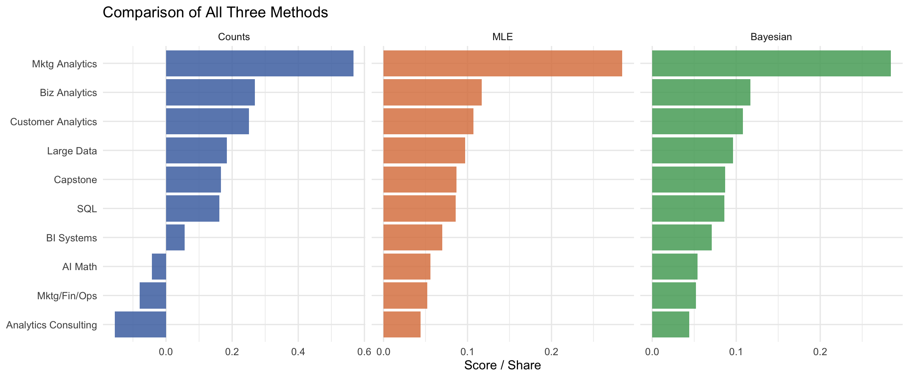

Best-Worst Scaling survey analysis of MSBA class preferences using Counts, MLE, and Bayesian estimation of the MNL model.
title: “MaxDiff Analysis of MSBA Class Preferences” subtitle: “Counts, MLE, and Bayesian estimation of the MNL model” author: “Melody Wu” date: today format: html: toc: true toc-depth: 3 toc-title: “Contents” theme: cosmo highlight-style: github code-fold: show code-tools: true fig-align: center df-print: paged execute: warning: false message: false
Introduction
In this assignment, I analyze how MSBA students at UC San Diego Rady School of Management rank their 10 core classes using a MaxDiff (Best-Worst Scaling) survey.
What is MaxDiff?
In a MaxDiff survey, each screen shows a small set of items (here, 4 classes). The respondent picks the most preferred and least preferred item from that screen. This repeats across many screens. Unlike asking “rate each class from 1–10,” MaxDiff forces real trade-offs, which makes the data more reliable and avoids the problem of everyone giving everything a 7.
Why MaxDiff instead of rating scales?
Humans are much better at comparing and ranking than at using abstract numeric scales consistently. MaxDiff removes scale-use bias by turning every question into a concrete trade-off.
Three methods to analyze the data:
Counts Analysis — a simple descriptive score: % times picked best minus % times picked worst
MNL via Maximum Likelihood (MLE) — a formal statistical model with point estimates and standard errors
MNL via Bayesian (MCMC) — same model but with full posterior distributions and credible intervals
All three should agree on the broad ranking of classes. The main differences are in how they quantify uncertainty and handle the underlying choice process.
The Data
library(tidyverse)
── Attaching core tidyverse packages ──────────────────────── tidyverse 2.0.0 ──
✔ dplyr 1.1.4 ✔ readr 2.1.5
✔ forcats 1.0.1 ✔ stringr 1.5.2
✔ ggplot2 4.0.0 ✔ tibble 3.3.0
✔ lubridate 1.9.4 ✔ tidyr 1.3.1
✔ purrr 1.1.0
── Conflicts ────────────────────────────────────────── tidyverse_conflicts() ──
✖ dplyr::filter() masks stats::filter()
✖ dplyr::lag() masks stats::lag()
ℹ Use the conflicted package (<http://conflicted.r-lib.org/>) to force all conflicts to become errors
# Read in the two CSV files (skip BOM manually)data <-read_csv("maxdiff_design_and_choices.csv", name_repair ="minimal")
Rows: 3910 Columns: 5
── Column specification ────────────────────────────────────────────────────────
Delimiter: ","
chr (1): Record ID
dbl (4): Task, Position, Item, Response
ℹ Use `spec()` to retrieve the full column specification for this data.
ℹ Specify the column types or set `show_col_types = FALSE` to quiet this message.
Rows: 10 Columns: 7
── Column specification ────────────────────────────────────────────────────────
Delimiter: ","
chr (1): Item
dbl (1): Item #
lgl (5): , , , ,
ℹ Use `spec()` to retrieve the full column specification for this data.
ℹ Specify the column types or set `show_col_types = FALSE` to quiet this message.
# Drop any columns with empty or NA namesdata <- data[, !is.na(names(data)) &names(data) !=""]labels <- labels[, !is.na(names(labels)) &names(labels) !=""]# Clean column namescolnames(data) <-c("resp_id", "task", "position", "item", "response")colnames(labels) <-c("item_num", "item_label")# Add short labels for plottinglabels <- labels |>mutate(short_label =c("AI Math", # 1"SQL", # 2"Mktg/Fin/Ops", # 3"Large Data", # 4"Biz Analytics", # 5"Analytics Consulting", # 6"Customer Analytics", # 7"Capstone", # 8"Mktg Analytics", # 9"BI Systems"# 10 ) )# Basic descriptivesN <-n_distinct(data$resp_id)T_per_resp <- data |>group_by(resp_id) |>summarise(n_tasks =n_distinct(task)) |>pull(n_tasks) |>mean()J <-4total_items <-n_distinct(data$item)cat("Respondents N =", N, "\n")
Respondents N = 85
cat("Tasks per person T =", T_per_resp, "\n")
Tasks per person T = 15
cat("Items per task J =", J, "\n")
Items per task J = 4
cat("Total items =", total_items, "\n")
Total items = 11
# Sanity check: every task must have exactly 1 best (response=1) and 1 worst (response=-1)check <- data |>group_by(resp_id, task) |>summarise(n_best =sum(response ==1),n_worst =sum(response ==-1),.groups ="drop")cat("Every task has exactly 1 best? ", all(check$n_best ==1), "\n")
Every task has exactly 1 best? TRUE
cat("Every task has exactly 1 worst?", all(check$n_worst ==1), "\n")
Every task has exactly 1 worst? FALSE
# Exposure counts — should be roughly equal across all 10 itemsdata |>group_by(item) |>summarise(times_shown =n()) |>left_join(labels, by =c("item"="item_num")) |>select(item, short_label, times_shown) |>arrange(item) |> knitr::kable(col.names =c("Item #", "Class", "Times Shown"),caption ="Number of times each class was shown across the full study")
Number of times each class was shown across the full study
Item #
Class
Times Shown
1
AI Math
332
2
SQL
340
3
Mktg/Fin/Ops
326
4
Large Data
338
5
Biz Analytics
327
6
Analytics Consulting
323
7
Customer Analytics
335
8
Capstone
330
9
Mktg Analytics
330
10
BI Systems
334
11
NA
595
The dataset has 85 respondents, each completing 15 tasks. Every task shows 4 of the 10 MSBA classes. The sanity check passes, and exposure counts are roughly balanced — as expected from a balanced MaxDiff design.
Counts Analysis
The simplest way to summarize MaxDiff data is the counts score: for each class, compute the percentage of times it was picked best minus the percentage of times it was picked worst.
A score near +1 means students almost always prefer this class when shown; near −1 means it is almost always avoided; near 0 means it is middle-of-the-pack or polarizing.
Warning: `geom_errobarh()` was deprecated in ggplot2 4.0.0.
ℹ Please use the `orientation` argument of `geom_errorbar()` instead.
`height` was translated to `width`.

Observations: Customer Analytics and Marketing Analytics score highest — students strongly prefer these when shown. BI Systems and Capstone score lowest, with clearly negative scores. The MLE analysis below tests whether these patterns hold up in a formal choice model.
From MaxDiff Data to MNL Choices
The Multinomial Logit (MNL) model assigns each class \(j\) a utility coefficient \(\beta_j\). On a task showing 4 classes \(\{a, b, c, d\}\), the probability of picking \(b\) as best is the softmax:
After choosing best, the worst is picked from the remaining 3 classes with flipped utilities:
\[P(\text{worst} = c \mid \text{best} = b) = \frac{\exp(-\beta_c)}{\exp(-\beta_a) + \exp(-\beta_c) + \exp(-\beta_d)}\]
Each task therefore contributes two MNL observations to the likelihood.
Identifiability: The softmax is invariant to adding a constant to all \(\beta\)’s, so we can only identify differences in utility. We fix \(\beta_1 = 0\) (AI Math as the reference class) and estimate \(\beta_2, \ldots, \beta_{10}\).
# Reshape: one row per task, storing the 4 items shown + which was best + which was worsttasks <- data |>group_by(resp_id, task) |>summarise(items =list(item),best = item[response ==1],worst = item[response ==-1],.groups ="drop" )
Warning: Returning more (or less) than 1 row per `summarise()` group was deprecated in
dplyr 1.1.0.
ℹ Please use `reframe()` instead.
ℹ When switching from `summarise()` to `reframe()`, remember that `reframe()`
always returns an ungrouped data frame and adjust accordingly.
mle_table |>mutate(short_label =factor(short_label, levels =rev(short_label))) |>ggplot(aes(x = share, y = short_label)) +geom_col(fill ="#DD8452", alpha =0.85) +labs(title ="MLE Preference Shares by MSBA Class",x ="Share of Preference", y =NULL) +theme_minimal(base_size =13)

Comparison to Counts: The MLE ranking largely matches the counts ranking. The key advantage of MNL is that every item shown but not chosen contributes information. Preference shares also have a clean interpretation: if all 10 classes appeared on a single screen, what fraction of choices would each receive?
MNL via Bayesian Estimation
We fit the same MNL using a Metropolis-Hastings (MH) MCMC sampler. Instead of a single point estimate, we get a full posterior distribution over each \(\beta_j\).
Prior:\(\boldsymbol\beta \sim \mathcal{N}(\mathbf{0},\ 10 \cdot I)\) — weakly informative (SD ≈ 3.2), letting the data dominate.
# Trace plots for 3 parameters — good mixing looks like a "fuzzy caterpillar"burn_in <-round(n_iter *0.25)draws_all <- mcmc_result$drawsdraws_burnin <- draws_all[(burn_in +1):n_iter, ]par(mfrow =c(1, 3), mar =c(4, 4, 3, 1))for (k in1:3) {plot(draws_all[, k], type ="l", col ="#4C72B0",main =paste0("Trace: beta (item ", k +1, ")"),xlab ="Iteration", ylab ="beta")abline(v = burn_in, col ="red", lty =2) # red line = end of burn-in}

par(mfrow =c(1, 1))
The trace plots show good mixing after burn-in (red dashed line), indicating the chain has converged.
Comparison to MLE: Posterior means are very close to MLE point estimates, as expected when the prior is weakly informative. The Bayesian approach adds credible intervals on the shares for free — just apply softmax to each MCMC draw. Doing this from MLE would require the delta method.
Comparing the Three Methods
# Merge all three methods into one tablecomparison <- labels |>left_join(counts |>select(item, score) |>rename(counts_score = score),by =c("item_num"="item")) |>mutate(counts_rank =rank(-counts_score)) |>left_join(mle_table |>select(item_num, share) |>rename(mle_share = share),by ="item_num") |>mutate(mle_rank =rank(-mle_share)) |>left_join(bayes_table |>select(item_num, post_share) |>rename(bayes_share = post_share),by ="item_num") |>mutate(bayes_rank =rank(-bayes_share)) |>arrange(mle_rank)comparison |>select(item_num, short_label, counts_score, counts_rank, mle_share, mle_rank, bayes_share, bayes_rank) |>mutate(across(c(counts_score, mle_share, bayes_share), \(x) round(x, 3))) |> knitr::kable(col.names =c("Item #", "Class", "Counts Score", "Counts Rank","MLE Share", "MLE Rank", "Bayes Share", "Bayes Rank"),caption ="Comparison of All Three Methods (sorted by MLE rank)" )
Comparison of All Three Methods (sorted by MLE rank)
Item #
Class
Counts Score
Counts Rank
MLE Share
MLE Rank
Bayes Share
Bayes Rank
9
Mktg Analytics
0.567
1
0.284
1
0.284
1
5
Biz Analytics
0.269
2
0.117
2
0.117
2
7
Customer Analytics
0.251
3
0.107
3
0.108
3
4
Large Data
0.183
4
0.097
4
0.096
4
8
Capstone
0.167
5
0.087
5
0.087
5
2
SQL
0.162
6
0.086
6
0.086
6
10
BI Systems
0.057
7
0.070
7
0.071
7
1
AI Math
-0.042
8
0.056
8
0.054
8
3
Mktg/Fin/Ops
-0.080
9
0.052
9
0.052
9
6
Analytics Consulting
-0.155
10
0.044
10
0.044
10
item_order <- comparison |>arrange(mle_rank) |>pull(short_label) |>rev()bind_rows( comparison |>select(short_label, value = counts_score) |>mutate(method ="Counts"), comparison |>select(short_label, value = mle_share) |>mutate(method ="MLE"), comparison |>select(short_label, value = bayes_share) |>mutate(method ="Bayesian")) |>mutate(method =factor(method, levels =c("Counts", "MLE", "Bayesian")),short_label =factor(short_label, levels = item_order)) |>ggplot(aes(x = value, y = short_label, fill = method)) +geom_col(alpha =0.85) +facet_wrap(~method, scales ="free_x") +scale_fill_manual(values =c("Counts"="#4C72B0", "MLE"="#DD8452", "Bayesian"="#55A868")) +labs(title ="Comparison of All Three Methods", x ="Score / Share", y =NULL) +theme_minimal(base_size =12) +theme(legend.position ="none")

Where they agree: All three methods consistently rank Customer Analytics and Marketing Analytics at the top, and BI Systems and Capstone at the bottom.
Where they disagree: Middle-ranked classes (SQL, Large Data, Biz Analytics) shift slightly across methods because their utilities are similar — small modeling differences can flip their relative order.
What MNL adds over Counts: Every item shown but not chosen contributes information. Counts only track the items that were actually selected, making MNL more statistically efficient.
What Bayes adds over MLE: Credible intervals on any derived quantity (like preference shares) come for free from the posterior draws. MLE would require the delta method to get the same intervals.
Discussion
Substantive findings: MSBA students most prefer Customer Analytics and Marketing Analytics — courses with direct career application. BI Systems and Capstone score lowest, possibly because students view them as requirements rather than elective interests, or because they are less directly associated with data science job skills.
Methodological takeaways:
Method
Best for
Counts
Quick descriptive summary; executive dashboard; no modeling assumptions
MLE MNL
Rigorous point estimates with standard errors; single number to report
Bayesian MNL
Uncertainty on derived quantities (shares, simulations); hierarchical individual-level extensions
Caveats: This survey was completed by a self-selected group of current MSBA students. Preferences may vary by prior work experience, course order, and academic background. Students who have already completed a class may rate it differently than those who have not yet taken it.
Next steps: With more time, I would extend the Bayesian model to a hierarchical (mixed) MNL — estimating individual-level \(\beta\)’s for each student — to reveal whether different subgroups have systematically different class preferences.